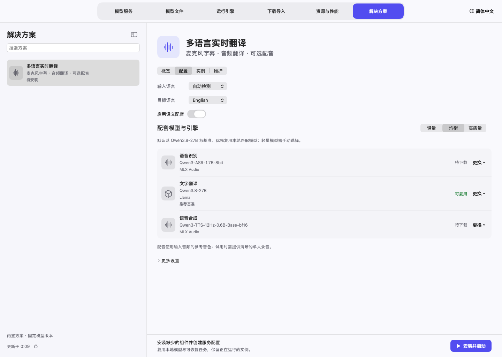
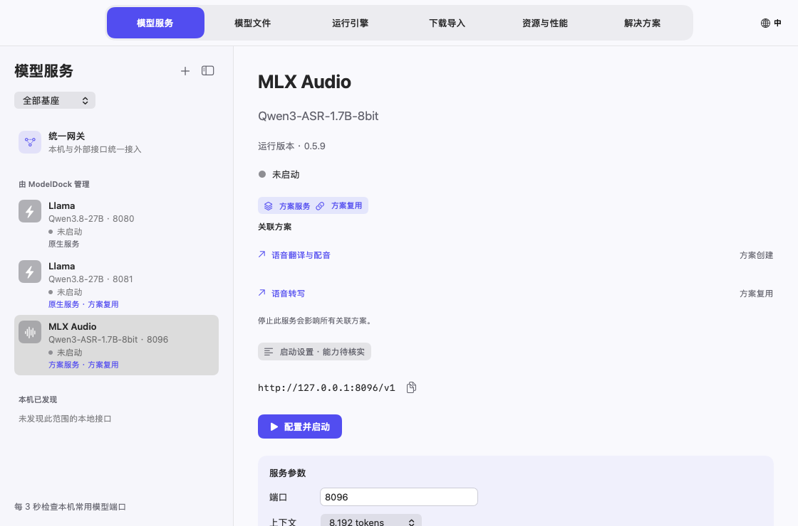
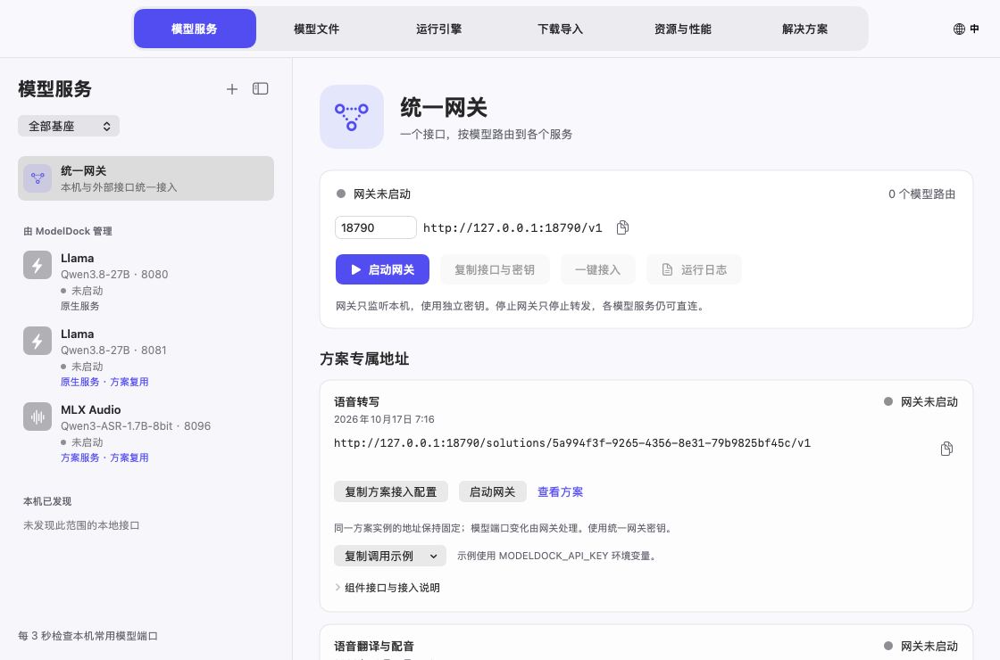
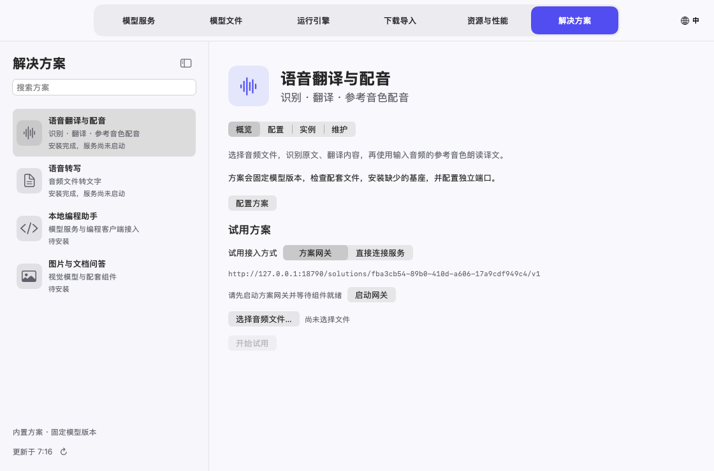
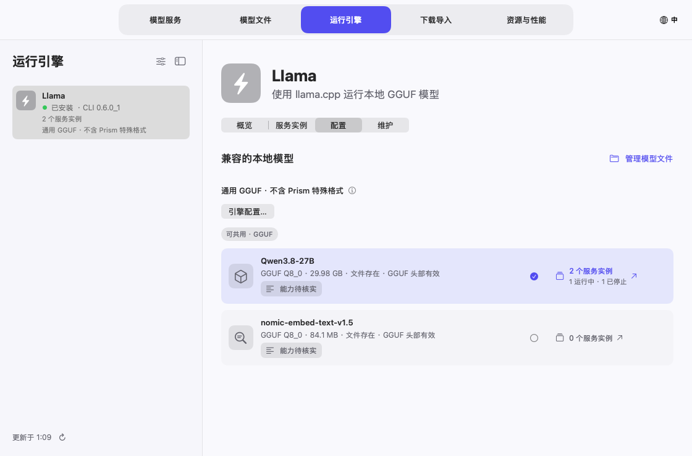
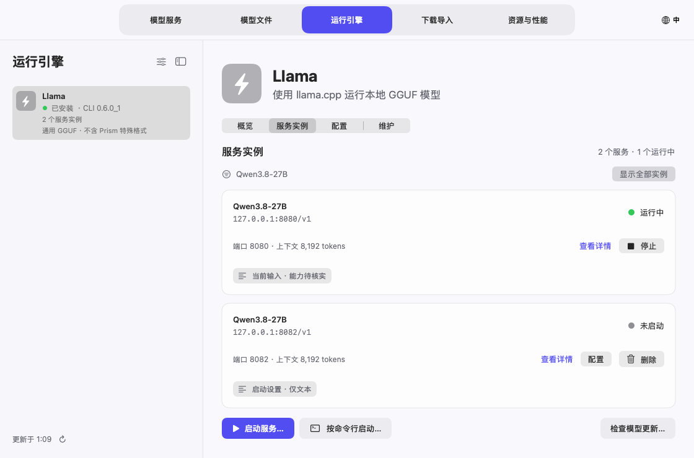
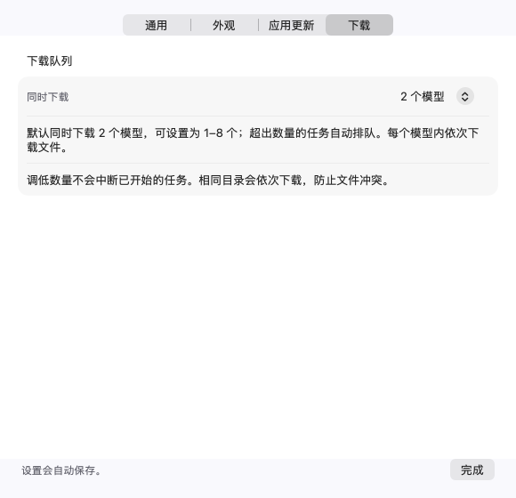
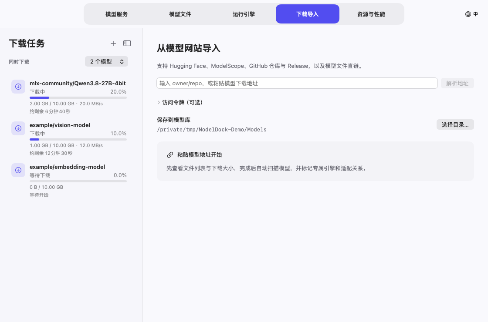

ModelDock 模型坞使用说明
模型坞把三类内容分开管理：运行引擎负责推理，模型文件保存在磁盘，模型服务向客户端提供 API。一个基座可以启动多个独立服务，每个实例使用自己的模型和端口。
本说明的截图使用示例数据，展示的是控制项和布局；其中的大小、资源数值不是性能实测，也不代表示例模型已实际加载。
1. 安装与语言选择
使用 Apple Silicon、macOS 14 或更新版本的 Mac。从项目 Releases 下载 DMG 或 ZIP，把 ModelDock.app 放进“应用程序”并打开。模型和第三方引擎需要另外准备；应用已附带统一网关需要的 Python 环境。
当前安装包使用临时签名，尚未经过 Apple 公证。如果可信来源的安装包被拦截，先尝试打开，再按照 Apple 官方说明，在“系统设置 → 隐私与安全性”选择“仍要打开”。只打开可信来源的程序。
首次启动默认英语，不因系统为中文而改变。点击主窗口右上角的地球/语言按钮，直接选择 English、简体中文、Français、Português 或跟随系统。窄窗口显示地球图标和 EN 等语言缩写。也可在菜单 ModelDock → Settings…（⌘,）中修改界面语言。切换立即生效并自动保存。
设置分为通用、外观、应用更新和下载四页。在“外观”中可选择跟随系统、浅色或深色，主窗口和菜单栏面板立即切换。需要更大的详情区域时，可以拖动侧栏与详情之间的分隔线调整宽度（双击恢复自动宽度），或点击侧栏标题右侧的边栏按钮（或按 ⌃⌘S）收起侧栏，左侧保留窄条上的同一按钮用于展开。两项设置都会被记住。

默认关闭主窗口后保持后台运行。也可以选择关闭窗口时退出，每次退出都会再次确认。
更新 ModelDock 应用自身
打开 ModelDock → 检查应用更新… 或 设置 → 应用更新，查看已安装版本、GitHub 正式版、上次检查时间和下载百分比/速度。每天自动检查、自动下载并覆盖安装默认开启，可以分别关闭。
只安装 etongle/ModelDock 中更新的正式 Release。Apple Silicon ZIP 必须有 GitHub 提供的 SHA-256；应用会核对哈希、包内路径、应用标识、版本、架构、最低 macOS 和代码签名。不会自动降级，也不安装预发行版本。
正在下载模型、安装/清理引擎、准备模型或编辑配置弹窗时，先等待操作结束。随后应用关闭、替换自身并重新打开，原来隐藏到菜单栏时恢复该模式。运行中的模型服务继续保留，模型库和个人设置不移动。旧应用保存在安装目录旁的 .ModelDock-backup-…app；替换或重新打开命令失败时恢复原应用。安装目录不可写时，改用 Release 安装包手动安装。
当前发行包采用临时签名，自动更新并不代表已经通过 Apple 公证；SHA-256 用于核对官方仓库发布的文件。
解决方案
打开顶部的 解决方案（⌘6）。页面沿用现有双栏结构，以及 概览 / 配置 / 实例 / 维护 分区。内置语音翻译与参考音色配音、语音转写、本地编程助手、图片与文档截图问答方案。

服务列表、运行引擎的实例卡片和服务详情都会显示来源：原生服务是在运行引擎直接创建的配置，方案服务由解决方案创建，方案复用表示现有服务被其他方案引用。这些标识可以同时出现，例如“原生服务 · 方案复用”。服务详情列出关联方案，点击名称可跳转；停止该服务会影响所有关联方案。

在 配置 中查看每个环节，通过 更换 选择兼容的本地模型或下载方案默认模型。文字模型可自动复用本地资源。语音方案的轻量、均衡、高质量预设用于选择语音模型大小，不代表实测性能承诺。输出语言和界面语言分别设置；在 更多设置 中选择模型库目录。
点击 一键安装并配置 后，程序固定模型仓库提交版本，在独立管理环境中安装缺少的基座，保留已经安装的引擎，复用匹配的下载任务和暂停进度，下载并检查文件，最后分配独立端口、创建未启动的服务配置。之后点击 启动方案 才加载模型。每项下载显示进度、速度、剩余时间，可跳转到原有下载管理。暂停或退出后可继续安装；失败保留任务和具体错误，支持重试。更改配置后再次安装会保存为独立的方案记录。
安装进度显示在组件列表上方，分为检查方案、安装引擎、下载模型、配置服务四个阶段；引擎百分比按已完成的安装步骤计算。开始下载模型时，如果仍在当前方案页面，程序会打开“下载导入”的对应任务。详细速度、预计剩余时间和逐文件操作统一在下载页面管理；方案页保留组件摘要及任务入口。
实例 可进入已有服务详情，或跳转到对应引擎筛选后的实例列表。方案不会停止只是借用的外部服务；其他方案仍在引用的实例会保留。移除原方案时，共享实例交给剩余方案管理。维护 → 移除方案配置 保留模型、下载任务和引擎，独占且正在运行的实例需要先停止。通过 更换 → 管理模型文件 进入现有文件检查与修复流程。
语音方案新增 MLX Audio 基座。Qwen3-ASR 标记为语音模型；Qwen3-TTS 的 speech_tokenizer 解码器归属于主模型，不再单独当作聊天模型。运行组件及模型支持参见 MLX Audio 项目，模型许可证独立于应用许可证。
全部组件就绪后，可在 试用方案 选择不超过 20 MiB 的音频文件。翻译方案依次显示识别原文、译文，再使用输入音频的参考音色生成 WAV 配音；建议使用简短、清晰的单人录音。初版处理上传文件，不承诺实时同声传译。转写方案只运行识别环节。编程及视觉方案提供简单问题测试；视觉输入支持不超过 10 MiB 的图片，PDF 页面可使用截图。编程客户端仍通过已有服务详情中的一键接入连接。
方案专属网关地址
在 解决方案 → 实例 或 模型服务 → 统一网关 → 方案专属地址 复制方案地址。每个已保存的方案实例都有一个独立 Base URL，例如：
http://127.0.0.1:18790/solutions/fba3cb54-89b0-410d-a606-17a9cdf949c4/v1

同一方案实例在程序重启、组件重启或模型端口变化后保留地址；采用另一配置安装的新实例会获得新地址。修改统一网关自身端口时，需要同步更新客户端 Base URL。点击 复制方案接入配置 可获得地址、统一网关密钥及组件模型名。网关默认只监听本机，开启局域网共享后使用同一网关密钥；已运行的旧网关会提示重启以启用新接口。
| 组件 model | 相对此 Base URL 的接口 | 用途 |
|---|---|---|
asr |
/audio/transcriptions |
文件上传识别；multipart 表单包含 model=asr 和 file |
translation |
/chat/completions |
翻译模型；在消息中给出翻译指令和目标语言 |
tts |
/audio/speech |
合成 WAV；Base 模型需要 reference_audio（base64）和 reference_text |
chat / vision |
/chat/completions |
对话或图片问答，根据方案选择 |
各方案仅公布自身的组件。用 GET <Base URL>/models 查看可用组件，用 GET <Base URL>/health 查看就绪状态；请求须使用 Authorization: Bearer <统一网关密钥>。每次请求调用一个组件，语音翻译的客户端按识别、翻译、配音顺序调用同一 Base URL 下的三个接口。聊天 JSON 请求可省略 model，前提是当前接口在该方案中只有一个对应组件；上传表单仍需指定组件名。
地址卡片上的 复制调用示例 菜单可以复制状态查询、组件列表以及该方案各组件的完整请求。先把网关密钥导出为 MODELDOCK_API_KEY；示例固定到当前方案地址，不把密钥写进脚本。音频识别使用 MODELDOCK_AUDIO_FILE 指定文件。参考音色配音还需设置 MODELDOCK_REFERENCE_TEXT（参考音频原文）、MODELDOCK_SPEECH_TEXT（待朗读文字），生成文件默认保存为 modeldock-speech.wav，可用 MODELDOCK_OUTPUT_FILE 修改。图片示例读取 MODELDOCK_IMAGE_FILE。这些示例使用 curl，配音和图片请求另需 Python 3。
试用方案 → 试用接入方式 默认选择 方案网关，通过上方专属地址完成识别、翻译和配音，可验证提供给外部客户端的同一路由。先启动方案组件和网关，等待就绪后开始；网关未就绪时会显示原因和启动入口。也可以显式切换为 直接连接服务 来试用原接口。网关连接失败不会自动改用直连。

方案组件停止、被禁用或绑定的模型发生变化时，接口返回明确错误，保留地址等待恢复。移除方案配置后，该地址返回 404。不会自动改用其他方案或同名模型。共享原生服务仍可通过原地址直连。
2. 准备模型基座
打开“运行引擎”，选择已安装的基座。卡片的整块区域都能点击，包括留白。“全局引擎设置”控制基座是否在常规列表中展示，单个“引擎配置”保存该基座支持的默认值及选项。每个引擎页分为概览、服务实例、配置和维护四段。

引擎配置卡片和“模型文件”会显示该本地模型版本的实例数量，区分运行中、已停止、加载中和异常状态。点击数量可跳到 运行引擎 → 服务实例，并只显示该模型；同一模型跨多个基座时可先选基座。点“显示全部实例”清除筛选。已停止实例表示保留的服务配置，删除配置后计数减少，模型文件保留。


- 点击“检查更新”核对版本。桌面应用与命令行组件分别展示，版本号不应相互比较。“已是最新”表示当前更新源没有更高版本；“有新版本”表示对应组件可更新。
- 更新基座时，会先停止由 ModelDock 启动的该基座服务，更新完成后按原设置自动重新启动；更新失败则按当前已安装版本重新启动。其他基座的服务不受影响；外部启动的进程或已打开的桌面应用仍需先自行关闭。
- Homebrew 发行版本需要本机 Homebrew。MLX 使用独立环境管理组件，本地编译工具根据识别出的构建产物管理。
- 卸载和清理残留前先核对范围。模型和个人数据默认保留；共享模型与使用中的文件受到保护。
禁用基座会把它从常规选择中隐藏，已有文件和服务记录仍可管理。
Apple Silicon 上的 Strata
Strata 的 Metal 后端为实验性支持，需要 macOS 15+、Apple Silicon 和 Xcode Command Line Tools。在 运行引擎 → Strata → 安装与更新 核对官方源码版本后编译。安装在独立环境构建 Metal 引擎和图片编码器，不会同时自动下载大体积模型权重。

- 选择官方 Mac 列表中的 Q2_0、IQ3_XXS、IQ3_S 或支持的 Unsloth UD-Q4/Q5/Q6 量化版本，界面显示主文件预估下载量。
- 点击 下载主模型文件…，在“下载导入”核对已选的主权重分片和 n-gram 表，再开始下载。这里可查看单文件进度、暂停与续传。
- 下载完成后返回 Strata，选择完整 GGUF 分片目录；准备时也会优先使用匹配的已完成下载任务。
- 需要图片时勾选 准备图片输入组件，选择保存位置，点击 准备模型与组件。按上游流程校验并准备词表、模型包、MTP 和可选视觉文件；上游输出的组件进度在日志中显示。暂停准备保留未完成文件，再次使用相同选择时继续未完成组合。
- 选中已准备模型，设置自动/纯文本/多模态、上下文和空闲端口，启动服务。引擎配置可关闭已准备的 MTP，调整支持的推测窗口。Mac 服务一次处理一个请求，多客户端排队；多个独立服务需要不同端口和足够内存。
每次准备保存为独立组合。在 模型文件 → 关联启动组件选择保留的组合供后续启动。已启动服务保留原组合；更新 Strata 只更换运行组件，保留模型文件，只要求停止 Strata 自己的服务。使用中的共用权重和组件不能删除或替换修复。
Strata 需要匹配的 Flash-Next 主权重 + n-gram + 词表/模型包，MTP 不是 Splash 的 DFlash 草稿。图片需要已准备的投影和编码器；此集成不宣称支持音频、视频或 PDF。仍可把外部 Strata 接口加入网关和 pi/OpenCode。架构限制见官方 Mac 说明。
3. 下载模型
不知道仓库名时，可在页面顶部搜索 Hugging Face：输入关键词并选择格式（全部、GGUF、MLX），结果按下载量排序，点击“选择”即解析该仓库的文件。文件列表中的 GGUF 文件会按大小标注“本机可运行”“内存偏紧”或“超出本机内存”（不含上下文缓存）。
在“下载导入”选择模型库位置，输入模型 ID 或完整地址，例如：
mlx-community/Qwen3.8-27B-4bit
https://huggingface.co/mlx-community/Qwen3.8-27B-4bit
owner/repo 默认到 Hugging Face 解析。也支持完整的 Hugging Face / ModelScope 仓库地址，以及支持的模型文件直链。受限仓库需要具备访问权限并填写令牌；访问令牌输入框不会保存到磁盘。
点击“解析地址”，检查文件列表：
- GGUF 语言模型一般选择一个所需量化版本；视觉、音频等模型可能还需要匹配的
mmproj。 - 完整 MLX 模型需要全部必需权重分片、配置、tokenizer；有视觉能力的模型还需对应 processor、视觉配置等文件。
- 草稿模型按它自己的格式下载。部分草稿由主模型提供 tokenizer，不需要给草稿仓库额外补 tokenizer。

点击“下载并导入”。对于同一仓库、版本、文件选择及保存位置，优先续传可恢复的已有任务。同一目标路径已经有写入任务时，不会再创建冲突写入；不同版本和不同位置独立管理。
看每个文件的进度，调整下载顺序
点击任务的“查看文件”。详细页展示文件状态、已下载大小、百分比，以及正在传输时的速度。

仓库选择列表里的勾选仅表示“选择下载”，不表示文件已经完成。下载完整并通过相关检查后，任务详情才标记为完成。
新建下载（+）打开全新导入页，清空上次的地址、令牌和文件选择，正在下载的任务继续运行。下载侧栏的“同时下载”或 设置 → 下载 可设置 1–8 个并发模型任务，默认 2 个。其余任务自动排队；共用同一目录的任务依次运行，避免文件冲突。调低并发数不会中断已开始的任务。

任务和当前文件会显示进度、速度与预计剩余时间。估算根据近期实际传输速度更新；大小未知、连接或校验时显示相应状态。若单独暂停了部分文件，剩余时间仅覆盖本轮继续下载的文件。
GitHub 支持仓库、tree 子目录、blob/raw 单文件和 Release 页面/附件地址。仓库文件固定到具体提交，Git LFS 指针会解析为实际模型数据。按需选择权重和配置文件，不会执行仓库脚本。只输入 owner/repo 仍默认使用 Hugging Face。

每个模型任务内依次处理文件。暂停某个文件会保留断点并继续处理其他文件；“优先下载”可把另一个文件放到前面。需要时继续指定文件或继续全部暂停文件。关闭主窗口继续下载，退出整个程序则暂停任务。
删除任务与清理未完成文件
任务的垃圾桶操作删除任务记录，保留已完成和未完成文件。正在下载的任务会先停止传输，再移除记录。因此，删除暂停的重复记录不会把正在被另一个任务使用的下载文件一并删除。
“清理未完成文件”是另外一个操作，清理前会检查目标及共用关系。删除记录与清理磁盘文件不是同一个操作。
4. 导入与检查本地模型
在“模型文件”点击 +，选择本地文件或完整目录。导入保留原位置，可以按基座、主模型/附属模型筛选，也可以搜索名称和路径。点击卡片任何区域即可选中。

详情展示格式、输入能力、来源版本、保存位置和兼容启动方式。支持格式不代表一定支持该架构，启动前应查看提示。
缺少或损坏的单个文件，在已知原始仓库和版本时可使用对应“修复”入口。程序只下载该文件至暂存位置，通过检查后才替换原目标。目标正在使用、文件发生变化或来源不匹配时会阻止替换。
5. 启动模型服务
点击“启动服务…”（模型服务侧栏的 +、引擎的“服务实例”分段，或模型的“配置服务”），在弹窗中选择引擎和模型，逐项检查：
- 端口：使用未占用的端口。独立托管的多个服务各有自己的地址；程序同时检查端口和监听进程身份。
- 上下文：选择引擎、模型及内存能支持的长度。客户端声明的窗口必须与真实服务一致。面板会按“权重 + 上下文缓存 + 运行开销”给出预计内存占用，并对照本机可用内存标为充足、偏紧或超出；这是按 f16 缓存估算的近似值，读不到模型结构时只计权重。
- 输入模式：选择自动、纯文本或支持的多模态。文本模型不能靠开关获得视觉能力。
- 配套组件：基座支持时，选择匹配的视觉投影或草稿模型。
- 运行选项：仅使用该引擎支持的参数；可通过“按命令行启动”配置额外受支持的命令行方式。
点击“启动服务”。弹窗关闭后，“模型服务”会展示启动阶段、可获取的百分比、接口地址和日志。启动可能先准备或下载辅助模型，再加载主模型。阶段百分比是阶段进度信息，不是 GPU 工作总量的精确计量；没有真实进度来源时保持未知。

服务就绪后再连接客户端。在“本次配套组件”查看实际应用的草稿、视觉和 tokenizer；已经运行的实例不会因为随后修改了关联而自动重载。
6. 关联草稿与视觉组件
在主模型的“关联启动组件”中选择匹配的草稿或 GGUF 投影文件，保存后启动新服务。修改关联只影响后续启动，不会重载当前运行实例。
Qwen3.8-27B 系列的 incoai/Qwen3.8-27B-DFlash2 是辅助草稿包，不能当作独立聊天模型运行。它需要 config.json 和 model.safetensors，可以共用主模型 tokenizer。匹配的新版 Splash 组合使用适配草稿；MLX-VLM 的草稿支持依赖具体运行时与架构，MLX-LM 不能把该格式当成通用草稿加载。
视觉模型可以在引擎支持时按纯文本启动。MLX 多模态需要 MLX-VLM，只有 MLX-LM 不够。旧 Splash packed 模型仍是纯文本，使用匹配的保留运行组件。
7. 服务实例与模型版本
“模型服务”列出每个独立实例的模型、端口和状态。整块卡片可选中，可以停止其中一个实例而保留另一个。停止后可删除该服务配置，模型文件和日志保留，该服务在 pi/OpenCode 中的接入登记会一并移除。模型文件已被删除的服务会显示提示，并提供“移除服务及相关接入”。如果客户端里还留有已删除模型或服务的登记，“接入编程助手”下方会出现“清理失效的接入登记”。接口地址后的复制图标可直接复制地址。
实例页的“服务参数”列出端口、上下文、输入模式和该引擎的专属选项，可直接修改。“附加启动参数”用于追加引擎原生参数（如 llama.cpp 的 -ngl 99 --threads 8），已由上方字段管理的参数会被拒绝。运行中的服务点击“保存并重启”，会停止后用新参数启动；新参数启动失败时自动按原参数恢复。由启动命令创建的服务请通过编辑命令修改。
实例页的“参数预设”可把上下文、输入模式和附加启动参数存成命名预设，套用到同类引擎的其他服务；套用后仍需点“保存”或“保存并重启”。“运行方式”中可勾选“随 ModelDock 启动”，并设置“空闲自动停止”：服务在设定时间内没有网关请求、CPU 也空闲时自动停止以释放内存，之后经统一网关发来的请求会自动唤醒它（首个请求需等待模型加载），直接访问服务端口不会唤醒。手动停止的服务不会被唤醒。
服务就绪后点击“试聊”，可直接向该服务发送消息，确认模型能正常回答。回复下方显示首字延迟、生成速度和 token 数；“对话参数”中可设置系统提示词、温度和最大输出，支持图片输入的服务还可以附加图片。试聊直接调用服务自己的接口，不经过网关，也不写入任何客户端配置。完整结束且服务报告了用量的回复会记入“实测历史”，标注“来自试聊”。点击“对比…”选择另一个运行中的服务后，同一条消息会同时发给两个服务，左右并排显示回复和速度。
支持版本快照的来源会把模型更新下载为另一个版本，已有服务继续使用启动时的路径和版本。新文件完整后，选择新版本，配置另一个实例或重启目标服务。旧版本可以保留供后续切回，也可在不使用时移至废纸篓。
运行中的主模型、辅助模型以及共享缓存受到保护。Ollama 登记模型使用原生删除操作，须先卸载常驻模型；它的删除不会经过废纸篓。
删除模型时会一并清理相关配置，确认弹窗会列出将要移除的内容：使用该模型的已停止服务配置及日志、pi/OpenCode 中由 ModelDock 写入的该模型登记（包括默认模型和 pi 的压缩设置）、网关中这些服务的路由偏好、其他模型或引擎默认设置中指向已删除草稿/投影的关联，以及该模型的测速记录。客户端配置修改前会备份，你自己添加的提供方和模型不受影响。卸载引擎时勾选“移除该引擎的服务配置……”也会按同样规则清理。
8. 直连服务或使用统一网关
直接服务地址例如 http://127.0.0.1:8083/v1，可从服务详情复制。使用服务实际报告的模型 ID。
“统一网关”把启用的路由暴露在同一个 OpenAI 兼容接口下：
- 添加程序发现的、已经就绪的本机服务。
- 添加远程兼容 API 的 base URL 和它所需的密钥。
- 选择路由的模型及允许输入的模态。
- 使用网关
/v1/models返回的别名，不凭名称猜测 provider/model。 - 保护网关访问密钥。远程接口和密钥是个人配置，不应出现在公开文档中。
网关和各个独立服务是不同地址，客户端可以选择任一接入方式。
“局域网共享”默认关闭。开启后网关监听所有网卡，页面显示本机局域网地址；其他设备必须携带网关密钥才能访问。请只在可信网络中开启。
pi 与 OpenCode 一键接入
从就绪服务打开“一键接入”，选择直连或统一网关、目标模型及工作目录。“写入配置”登记到客户端原生配置并备份原配置，保留已有提供方和默认模型。
“接入并打开”使用准备好的连接启动客户端，“复制命令”可用于手动终端启动。更新模型限制或参数后，已经运行的客户端可能需要重载、重新选择模型或新建会话。
Web search 是客户端工具能力。支持时启用提供的搜索工具接入，并配置所需凭证；普通生成请求多加一个参数不会自动获得联网搜索。
9. 菜单栏管理与性能

在“设置 → 外观 → 菜单栏显示”中选择仅图标，可让菜单栏项更窄，在带刘海的屏幕上不易被遮挡。“设置 → 通用 → 启动”中开启“登录 Mac 时启动 ModelDock”，登录后自动打开 ModelDock，并启动标记为“随 ModelDock 启动”的服务；关闭则不自动打开。它会加入系统设置的“登录项”，建议把 ModelDock 放在“应用程序”文件夹后再开启。“设置 → 通用 → 通知”会在下载完成或失败、服务就绪、启动失败或意外退出时发送 macOS 通知。
菜单栏面板显示 CPU、内存、磁盘、模型库、服务资源、进行中或需要处理的下载任务及已有测量结果。下载任务的管理入口会跳转到对应任务。
面板内操作正常响应，点击其他窗口或桌面区域会自动收起；点击状态图标切换展开/关闭。“打开管理界面”重新显示主窗口。默认关闭主窗口继续后台任务；“退出模型管理”会暂停下载、停止监测，独立运行的模型服务继续可用。
标为实测的性能来自实际测量或支持的运行日志，没有数据时不编造数值。启动估算进度与生成吞吐量是不同指标，不应混用。
“网关请求”显示经统一网关的请求：按模型汇总请求数、失败数、输入/输出 token 和平均耗时，并列出最近的请求。网关只记录这些元数据，不记录请求和回复内容。
“实测历史”中每条记录右侧的删除图标可单独删除该记录。存在已删除模型的记录时，标题旁会出现“清理已删除模型的记录”；如果模型位于暂未连接的磁盘，请先连接再清理。
10. 常见问题
| 问题 | 检查或解决方式 |
|---|---|
| 启动按钮不可用 | 检查引擎是否启用并安装、模型是否完整兼容、端口是否有效未占用、多模态组件是否匹配，以及目标基座是否正在维护 |
| Splash 准备卡在草稿下载 | 检查草稿任务、必需文件、仓库访问和运行日志；主模型下载完不代表辅助文件已完成 |
| 视觉模型以文本运行 | 选择多模态/自动及能够加载视觉组件的运行时；只有 MLX-LM 不够 |
| 端口被错误标为其他基座 | 检查实际监听进程和服务身份，再使用冲突处理或改为未占用端口 |
| 上下文溢出、重复压缩 | 核对客户端与服务的真实窗口，重载客户端新配置，压缩或重开会话，减少不必要的大上下文输入 |
| 模型看起来重复 | 检查版本、量化和实际权重位置。不同版本/独立权重应分开，同一权重的多引擎登记应关联在同一来源下 |
| 缺少单个模型文件 | 来源和版本已知时修复该文件；否则重新解析来源并选择必需文件 |
| 下载速度显示“—” | 当前没有测量字节传输，例如暂停、校验或完成状态 |
第三方引擎日志和客户端错误可能保留原工具的语言。
快捷键与保存位置
| 快捷键 | 操作 |
|---|---|
| ⌘1–⌘5 | 切换主页面 |
| ⌘R | 重新扫描（引擎和模型列表底部的 ↻ 也可） |
| ⌃⌘S | 收起或展开侧栏 |
| ⌘O | 添加模型目录 |
| ⌘, | 设置 |
| ⌘W | 按设置关闭主窗口 |
| ⌘Q | 退出程序 |
为兼容已有安装，程序状态继续保存在 ~/Library/Application Support/ModelManager；模型保存在所选模型库或导入位置。安装包和文档截图不包含个人配置、凭证或模型权重。
非商业使用要求和第三方许可边界见许可说明。